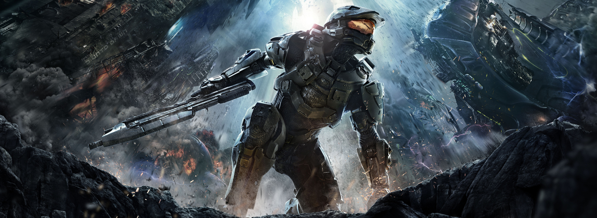

Call of Duty Black Ops II
A brand new Gamin' Walkthrough for Call of Duty Black Ops 2 is in progress! We have consulted and played with professional players in order to bring you the best walkthrough possible. We interviewed famous Call of Duty professional players, who had much to say about the game..
I want to read more!

Halo 4
The best Halo 4 Legendary Walkthrough is now complete! We spent many hours playing through the game to find you only the best way to play through the game.
Walk Me Through!
Quake LIVE Online Guide
We at Gamin' Walkthroughs have spent months researching to bring you the best Online Guide for Quake LIVE! Our Walkthrough covers topics from config, gamestyles, and even how to use different weapons!
I want to read more!